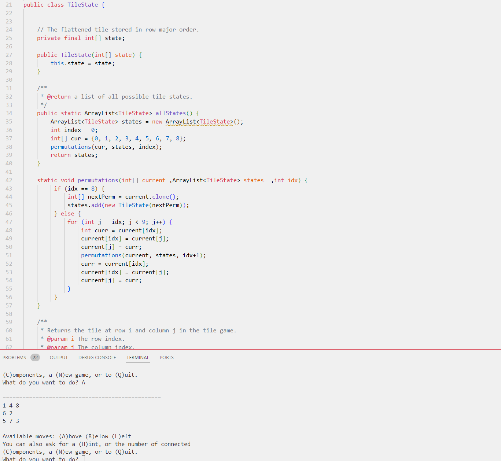
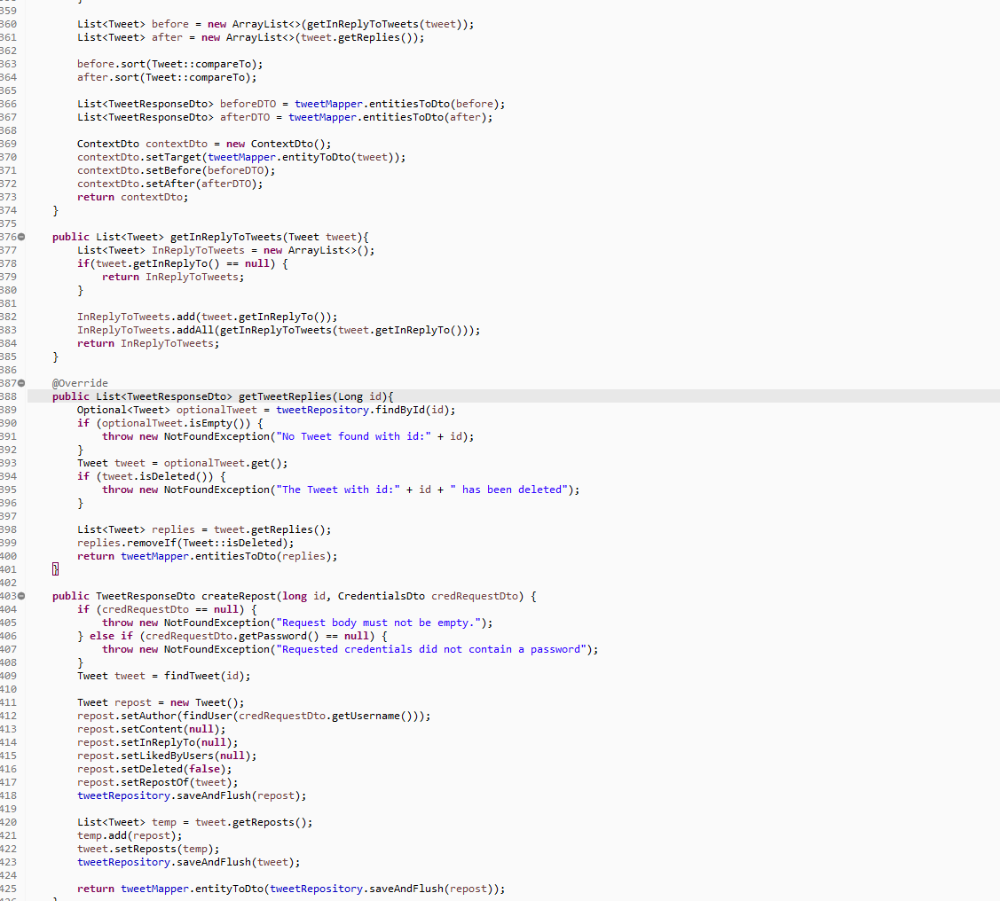
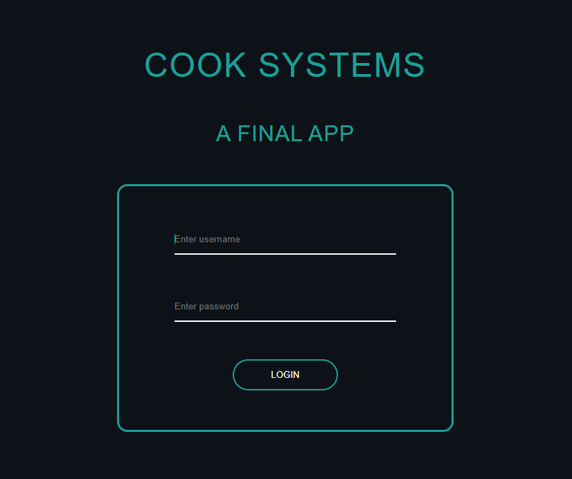
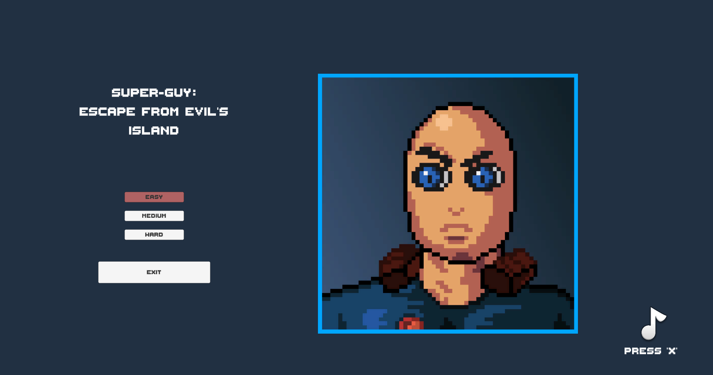

About
Projects
Resume
Contact
Projects

Tile Game:
Program generates a 3x3 tile game in the command line.
It presents the user with a prompt that allows the user
to play the tile game, and/or get a one move hint.

Twitter API:
This Project is designed to emulate the ralationships between
Users, tweets, and hashtags in a social media platform like
twitter. All of this information is stored and accessed in a database
and includes functionality to access threads, mentions, and reposts.

Angular Company Website:
A web-based application that stores user data for
a company structure with workers and admins. As well as
allow said admins to assign teams and create projects.
Browser Guessing Game:
A browser based guessing game created with Angular.
Game interacts with Spotify API to pull songs for the
user to guess based on the audio and other hints if enabled.

SGEFEI Unity Game:
A simple 2D platformer created in Unity Engine.
You play as Superguy, stuck on an island full of threats,
where you are tasked with surviving until evacuation arrives.